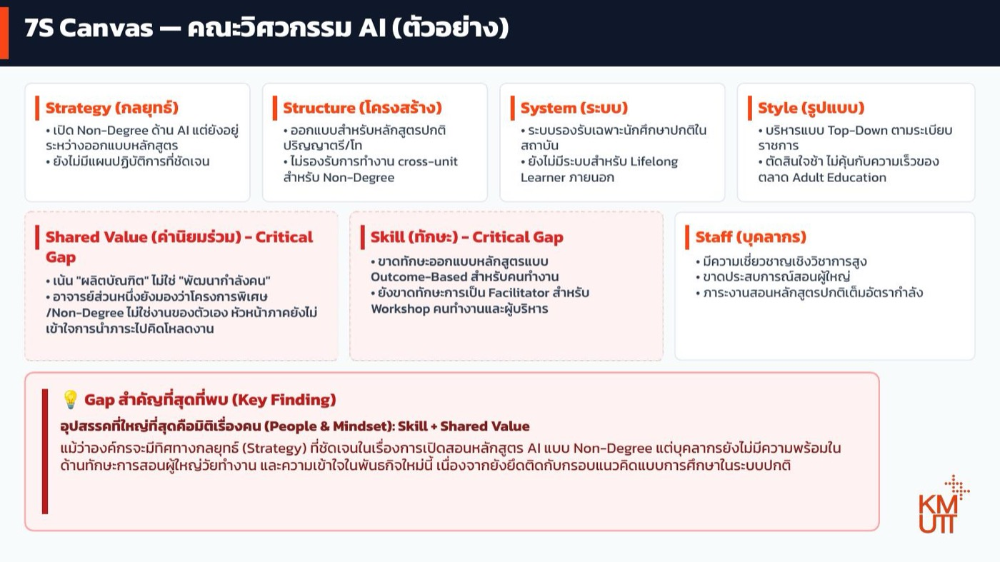

คิดและตัดสินใจด้วย AI¶
หน้าอื่น ๆ ในเว็บนี้ใช้ AI ทำงานให้ — ร่างข้อความ สรุปประชุม ทำสไลด์ วิเคราะห์ข้อมูล อ่านเอกสาร
หน้านี้ต่างออกไป: เราใช้ AI เป็นคู่คิด ไม่ใช่คนทำงาน และคำตอบสุดท้ายยังเป็นของเราเสมอ
สิ่งที่คนมักทำผิด
ถาม AI ว่า "ควรทำอะไรดี" แล้วทำตาม — นั่นคือการโอนการตัดสินใจให้เครื่องมือ ซึ่งรับผิดชอบแทนเราไม่ได้ และไม่รู้ข้อจำกัดด้านงบ นโยบาย หรือการเมืองภายในที่เราไม่ได้บอก
เครื่องมือที่ใช้: Gemini หรือ ChatGPT / Claude — งานนี้ต้องการแค่บทสนทนาที่ลึกและถามกลับได้ ไม่ต้องการเครื่องมือพิเศษ
ไฟล์ที่ต้องเตรียม: 📄 7S-guide.pdf — คู่มืออธิบายว่าแต่ละมิติของ 7S คืออะไร ดาวน์โหลดไว้ก่อน
สถานการณ์ที่เราจะใช้ฝึก¶
คณะกำลังจะเปิดหลักสูตร Non-Degree ด้าน AI สำหรับคนวัยทำงาน — ผู้บริหารเห็นชอบทิศทางนี้แล้ว แต่พอจะเริ่มลงมือจริง กลับติดขัดไปหมด
คุณเป็น HR ของคณะนี้ และได้ยินปัญหามาหลากหลาย สิ่งที่ได้ยินจากคนในคณะ:
"หลักสูตรยังออกแบบไม่เสร็จเลย ยังไม่รู้ว่าจะเริ่มยังไง · โครงสร้างเวลาเรียนออกแบบไว้สำหรับ ป.ตรี/ป.โท ตารางสอนก็ไม่เอื้ออำนวยให้สอนคนทำงาน · ระบบทะเบียนรองรับแค่นักศึกษาปกติ คนนอกที่อยากมาเรียนลงทะเบียนไม่ได้ · อาจารย์เก่งวิชาการมาก แต่ไม่เคยสอนคนทำงาน · ภาระสอนหลักสูตรปกติก็เต็มอยู่แล้ว · อาจารย์บางส่วนมองว่า Non-Degree ไม่ใช่งานของตัวเอง หัวหน้าภาคก็ยังไม่รู้จะคิดโหลดงานให้ยังไง"
คุณต้องเสนอผู้บริหารว่าจะแก้อะไรก่อน — และปัญหาที่ได้ยินมาทั้งหมดนี้ ปนกันจนแยกไม่ออกว่าอะไรคือสาเหตุ อะไรคือผลที่ตามมา
สิ่งที่ต้องส่ง: บทวิเคราะห์หน้าเดียวที่ผู้บริหารอ่านแล้วเห็นภาพว่าอุปสรรคจริงอยู่ตรงไหน และควรลงมือแก้อะไรก่อน
เริ่มจากกรอบคิด ที่เหมาะสม¶
เวลาเราสอน HR ให้แก้ปัญหาเชิงกลยุทธ์ เราสอนกรอบแนวคิดก่อน แล้วค่อยสอนวิเคราะห์
สำหรับ AI การให้กรอบคิด ช่วยให้ AI แยกแยะประเด็นได้ดีขึ้น
สำหรับตัวอย่างนี้ เราให้น้อง AI ผู้ช่วย HR ของเราใช้กรอบคิด McKinsey 7S คือกรอบวิเคราะห์สุขภาพองค์กรผ่าน 7 มิติที่เชื่อมโยงกัน — จุดประสงค์คือหาว่า มิติไหนอ่อน หรือมิติไหนไม่สอดคล้องกัน ไม่ใช่ให้คะแนนว่าดีหรือไม่ดี
| มิติ | คำถามหลักที่ต้องตอบ |
|---|---|
| Strategy — กลยุทธ์ | หน่วยงานมีทิศทางชัดไหม คนรู้ไหมว่าจะไปไหน |
| Structure — โครงสร้าง | ใครรับผิดชอบอะไร โครงสร้างรองรับงานจริงหรือมีแค่บนกระดาษ |
| System — ระบบ | ระบบ IT ข้อมูล และกระบวนการทำงาน ช่วยหรือเป็นอุปสรรค |
| Staff — คน | มีคนพอไหม คนที่มีใช่คนที่ต้องการไหม อัตราลาออกเป็นอย่างไร |
| Skill — ทักษะ | คนมีทักษะที่งานต้องการไหม ช่องว่างอยู่ตรงไหน |
| Style — รูปแบบการบริหาร | ผู้บริหารตัดสินใจแบบไหน วัฒนธรรมการทำงานเป็นอย่างไร |
| Shared Value — ค่านิยมร่วม | องค์กรมีค่านิยมที่คนเชื่อจริง หรือมีแค่บนกระดาษ |
ทำไมต้องมีกรอบ ไม่เล่าปัญหาเปล่า ๆ: ถ้าเล่าลอย ๆ AI จะสรุปกลับมาเป็นก้อนเดียวตามที่เราเล่า — พอมีกรอบ มันจะแยกให้เห็นว่าปัญหากระจุกอยู่มิติไหน และมิติไหนที่เรายังไม่ได้พูดถึงเลย ซึ่งมักเป็นจุดที่คำตอบซ่อนอยู่
แบบฝึกหัดที่ 1: สอนกรอบคิดให้ AI ก่อน แล้วระบายปัญหา¶
ขั้นตอน¶
- อัปโหลด
7S-guide.pdfเข้า Gemini ก่อน — เพื่อให้ AI วิเคราะห์ตามกรอบที่เราเข้าใจตรงกัน ไม่ใช่กรอบที่มันไปหยิบมาจากที่ไหนก็ไม่รู้ - เล่าปัญหาตรง ๆ เหมือนคุยกับเพื่อนร่วมงาน ไม่ต้องจัดระเบียบก่อน:
ขอระบายปัญหาในหน่วยงานให้ฟังก่อนนะ:
[พิมพ์หรือพูดได้เลย เช่น "คณะจะเปิดหลักสูตร Non-Degree ด้าน AI สำหรับคนทำงาน
แต่หลักสูตรยังออกแบบไม่เสร็จ โครงสร้างคณะทำไว้สำหรับ ป.ตรี/ป.โท จะทำงานข้ามหน่วยงานก็ติดขัด
ระบบทะเบียนรองรับแค่นักศึกษาปกติ คนนอกลงทะเบียนไม่ได้
อาจารย์เก่งวิชาการแต่ไม่เคยสอนคนทำงาน ภาระสอนปกติก็เต็มแล้ว
อาจารย์บางส่วนมองว่า Non-Degree ไม่ใช่งานของตัวเอง หัวหน้าภาคยังไม่รู้จะคิดโหลดงานยังไง"]
ไฟล์ที่แนบมาคือคู่มืออธิบายว่าแต่ละมิติของ 7S หมายถึงอะไร
ช่วยจัดสิ่งที่ฉันเล่าลงในกรอบ 7S โดย:
- แต่ละมิติเขียนเป็น bullet สั้น ๆ ไม่เกิน 2-3 ข้อ ไม่ต้องเป็นย่อหน้า
- กำกับว่ามิติไหนเป็น Critical Gap และมิติไหนที่ยังพอไปได้
- บอกด้วยว่ามิติไหนที่ฉันยังไม่ได้ให้ข้อมูลเลย
- ยังไม่ต้องสรุป Key Finding ตอนนี้ รอข้อมูลครบก่อน
ผลลัพธ์ที่ได้¶

📄 เปิดดูไฟล์เต็ม (7s-example.pdf)
👉 ดู Gemini Conversation ตัวอย่าง — บทสนทนาเต็มตั้งแต่อัปโหลดคู่มือจนได้ Canvas
จากเรื่องที่เล่าแบบกระจัดกระจาย AI จัดออกมาเป็นภาพเดียวที่ผู้บริหารกวาดตาอ่านจบได้ — สังเกต 3 อย่างที่ทำให้มันใช้งานได้จริง:
| สิ่งที่สังเกตได้ | ทำไมสำคัญ |
|---|---|
| แต่ละมิติมีแค่ 2–3 bullet สั้น ๆ | ไม่ใช่เรียงความ — เพราะเราสั่งความยาวไว้ในพรอมต์ ถ้าไม่สั่งจะได้ย่อหน้ายาวที่เอาไปใช้ต่อไม่ได้ |
| Skill และ Shared Value ถูกกำกับว่า Critical Gap | ไม่ได้ให้น้ำหนักทุกมิติเท่ากัน แต่ชี้ชัดว่าจุดไหนคือปัญหาจริง |
| Strategy ไม่ได้ถูกกำกับว่าเป็นปัญหา | ทิศทางชัดอยู่แล้ว — สิ่งที่ขาดคือความพร้อมของคน ซึ่งเป็นคนละเรื่องกับการไม่มีแผน |
จุดที่การวิเคราะห์แบบมีกรอบให้ผลต่างจากการฟังคำบ่น
ถ้าฟังแค่อาการ เราจะได้ข้อสรุปว่า "ทุกอย่างยังไม่พร้อม" แล้วแก้ทุกเรื่องพร้อมกัน
แต่พอจัดลงกรอบแล้วเห็นว่า ปัญหากระจุกอยู่ที่มิติเรื่องคน (Skill + Shared Value) ส่วนมิติอื่นเป็นผลที่ตามมา — การแก้จึงเริ่มจากคนละจุด และประหยัดกว่ามาก
ยิ่งใส่ข้อมูลมาก AI ยิ่งวิเคราะห์แม่น¶
ผลรอบแรกจะมีมิติที่ AI บอกว่า "ยังไม่มีข้อมูล" — เติมลงไปในบทสนทนาเดิม ลองนึกถึงคำถามเหล่านี้:
| มิติ | คำถามที่ช่วยให้นึกออกว่าควรบอกอะไรเพิ่ม |
|---|---|
| Staff — คน | หน่วยงานมีกี่คน? ใครพอจะรับงานใหม่ได้บ้าง? ภาระงานปัจจุบันเต็มแค่ไหน? |
| Skill — ทักษะ | คนที่มีอยู่ทำอะไรได้แล้วบ้าง? ทักษะที่ขาดคืออะไรแน่ ๆ? เคยมีใครทำเรื่องนี้มาก่อนไหม? |
| System — ระบบ | ระบบที่มีรองรับอะไรได้บ้าง? ถ้าจะปรับต้องคุยกับใคร ใช้เวลานานแค่ไหน? |
| Structure — โครงสร้าง | ใครจะเป็นเจ้าภาพเรื่องนี้? ตอนนี้มีใครรับผิดชอบอยู่หรือยัง? |
| Strategy — กลยุทธ์ | ผู้บริหารตั้งเป้าไว้แค่ไหน? มีกำหนดเวลาไหม? งบมาจากไหน? |
| Style — การบริหาร | เรื่องแบบนี้ปกติตัดสินใจกันอย่างไร ใช้เวลานานไหม? |
| Shared Value — ค่านิยม | คนในหน่วยงานพูดถึงเรื่องนี้กันว่าอย่างไร? มีใครสนับสนุนเต็มที่บ้าง? |
ขอเพิ่มข้อมูลอีกหน่อย:
[ใส่รายละเอียดและตัวเลขถ้ามี เช่น "คณะมีอาจารย์ 24 คน มีคนที่เคยสอนคนทำงานจริง 2 คน
ผู้บริหารตั้งเป้าเปิดรุ่นแรกภาคเรียนหน้า งบยังไม่ได้จัดสรรแยก
ยังไม่มีใครถูกแต่งตั้งเป็นเจ้าภาพอย่างเป็นทางการ"]
ช่วยปรับ 7S Canvas ให้ละเอียดขึ้นตามข้อมูลใหม่นี้
สังเกตว่าเรายังไม่ได้ถาม 'ควรทำอะไรดี' เลย
ขั้นนี้เราให้ AI จัดระเบียบสิ่งที่เรารู้ ก่อน เพราะการเห็นปัญหาครบถ้วนคือเงื่อนไขของการตัดสินใจที่ดี
แบบฝึกหัดที่ 2: หาสาเหตุจริง ไม่ใช่แก้ที่อาการ¶
ปัญหาที่พบบ่อยที่สุดในการตัดสินใจ: เห็นอาการแล้วแก้ที่อาการ
| เห็นอาการ | มักแก้ด้วย | แต่ถ้าสาเหตุจริงคือ... |
|---|---|---|
| คนไม่ค่อย engage งานไม่มีคนอาสาทำ | รับคนเพิ่ม | "คนใหม่ไม่มีใครดูแลให้เข้ากับวัฒนธรรม" → รับเพิ่มก็วนซ้ำ |
| ผลงานไม่ดี | จัดอบรม | "ไม่มีเป้าหมายที่ชัดตั้งแต่ต้น" → อบรมเท่าไหร่ก็ไม่ช่วย |
| ข้อมูลไม่ครบ | จ้างทำระบบใหม่ | "ไม่มีคนรับผิดชอบกรอก" → ระบบใหม่ก็ว่างเปล่าเหมือนเดิม |
ขั้นที่ 1 — ให้วิเคราะห์ผลกระทบจริง ไม่ใช่แค่บอกว่า "ไม่ดี"¶
จากสิ่งที่คุยกันมา ช่วยวิเคราะห์ gap ในแต่ละมิติ โดย:
- ระบุว่า gap แต่ละอันส่งผลอย่างไรในทางปฏิบัติ ไม่ใช่แค่บอกว่าไม่ดี
แต่บอกว่าทำให้เกิดอะไร หรือทำอะไรไม่ได้
- ถ้า gap ไหนเชื่อมกัน หรือ gap หนึ่งเป็นสาเหตุของอีกอันหนึ่ง ให้บอกด้วย
- จัดลำดับว่าควรแก้อะไรก่อน และเพราะอะไร
จากนั้นเขียนกล่อง "Gap สำคัญที่สุดที่พบ (Key Finding)" ปิดท้าย
โดยสรุปข้ามมิติว่าอุปสรรคใหญ่ที่สุดของหน่วยงานคืออะไร ไม่เกิน 3-4 บรรทัด
Key Finding คือส่วนที่ผู้บริหารอ่านจริง
ใน Canvas ข้างต้น Key Finding ชี้ว่าอุปสรรคที่ใหญ่ที่สุดคือ เรื่องคนและ mindset (Skill + Shared Value) ทั้งที่กลยุทธ์ชัดเจนอยู่แล้ว — ข้อสรุปแบบนี้เปลี่ยนทิศทางการแก้ปัญหาทั้งหมด จากการเร่งออกแบบหลักสูตร มาเป็นการเตรียมคนก่อน
ถ้าไม่บังคับให้สรุปข้ามมิติ เราจะได้แค่รายการ gap 7 อันที่ดูสำคัญเท่ากันหมด ซึ่งเอาไปตัดสินใจต่อไม่ได้
ขั้นที่ 2 — เขียน Problem Statement ที่ครบ 3 อย่าง¶
Problem Statement ที่ดีบอก 3 อย่าง: ใครได้รับผลกระทบ · ปัญหาคืออะไรและเกิดจากอะไร (สาเหตุ ไม่ใช่อาการ) · ถ้าไม่แก้จะเกิดอะไร
สำหรับแต่ละ gap เขียน Problem Statement 1 ย่อหน้า โดยระบุ:
- ใครได้รับผลกระทบ (ระบุให้ชัด ไม่ใช่แค่ "องค์กร")
- ปัญหาคืออะไร และเกิดจากสาเหตุอะไร (สาเหตุ ไม่ใช่อาการ)
- ถ้าไม่แก้ หน่วยงานจะเจอผลกระทบอะไร
อ้างอิงเฉพาะสิ่งที่ฉันบอกมา ถ้าส่วนไหนข้อมูลยังไม่พอ ให้บอกตรง ๆ ว่าต้องการรู้อะไรเพิ่ม
อ่านแล้วเถียงกลับ
ข้อไหนที่ AI ให้น้ำหนักผิด หรือมองข้ามไป บอกให้แก้ได้เลย
ถ้าอ่านแล้วเห็นด้วยทุกข้อโดยไม่ต้องแก้อะไร ให้สงสัยไว้ก่อนว่าเราให้ข้อมูลไม่พอ จน AI แค่สะท้อนสิ่งที่เราพูดกลับมา
แบบฝึกหัดที่ 3: ขอทางเลือกและให้ AI หาจุดอ่อนของแผน¶
จาก Problem Statement ที่สรุปกันไว้ ช่วยเสนอทางเลือกในการแก้ 3 ทาง โดยแต่ละทางระบุ:
- ต้องใช้ทรัพยากรอะไรบ้าง (คน เวลา งบ)
- จะเห็นผลเมื่อไหร่
- ข้อเสียหรือความเสี่ยงของทางนี้คืออะไร
- ถ้าทำแล้วไม่ได้ผล จะรู้ได้อย่างไรและเมื่อไหร่
จัดอันดับให้ด้วยว่าทางไหนน่าเริ่มก่อน และเพราะอะไร
จากนั้นให้ AI ทำหน้าที่ค้าน:
สมมติว่าคุณเป็นผู้บริหารที่ไม่เห็นด้วยกับแผนนี้
ช่วยหาจุดอ่อนของแผนที่เลือกไว้ให้มากที่สุด — ทั้งเรื่องความเป็นไปได้
ผลข้างเคียงที่อาจเกิด และสมมติฐานที่อาจไม่จริง
เทคนิคนี้เรียกว่า devil's advocate prompting
การให้ AI ค้านแผนของเราเอง เป็นวิธีหาจุดอ่อนที่เราไม่ทันคิดก่อนที่จะไปเจอในห้องประชุมจริง
สรุป¶
หลักการใช้ให้ถูกต้อง
- สอนกรอบคิดให้ AI ก่อนใช้งาน — อัปโหลดคู่มือกรอบที่องค์กรเราใช้จริง ป้องกันไม่ให้ AI ไปหยิบนิยามจากที่อื่นที่ไม่ตรงกับที่เราเข้าใจ
- สั่งรูปแบบผลลัพธ์ไปด้วย — "แต่ละมิติไม่เกิน 2-3 bullet" และ "กำกับว่ามิติไหนเป็น Critical Gap" คือสิ่งที่ทำให้ได้ Canvas หน้าเดียวแทนเรียงความ
- เล่าดิบ ๆ ได้เลย ไม่ต้องเรียบเรียงก่อน — การจัดระเบียบคืองานของ AI หน้าที่เราคือเล่าให้ครบ
- อย่าถาม "ควรทำอะไรดี" — ถาม "มีทางเลือกอะไรบ้าง แต่ละทางแลกกับอะไร"
- สั่งให้บอกว่าข้อมูลตรงไหนยังไม่พอ — ป้องกันการวิเคราะห์บนสมมติฐานที่ AI แต่งขึ้นเอง
- บังคับให้แยกสาเหตุออกจากอาการ — โดยธรรมชาติ AI จะสรุปสิ่งที่เราเล่า (ซึ่งมักเป็นอาการ) กลับมาให้
- ให้ข้อมูลเป็นตัวเลขเมื่อมี — "มีอาจารย์ที่เคยสอนคนทำงานจริง 2 คนจาก 24 คน" ให้การวิเคราะห์คนละระดับกับ "อาจารย์ยังไม่พร้อม"
สิ่งที่ไม่ควรทำ
- มองแผนที่ AI ร่างเป็นแผนที่ผ่านการอนุมัติแล้ว — มันไม่รู้ข้อจำกัดที่เราไม่ได้บอก
- ยึดคำตอบแรก — คำตอบรอบแรกคือจุดเริ่มบทสนทนา ไม่ใช่ข้อสรุป
- ปล่อยให้ AI เติมข้อเท็จจริงที่เราไม่เคยบอก — โดยเฉพาะตัวเลขและชื่อคน อ่านแล้วถามตัวเองว่า "อันนี้ฉันบอกไปหรือเปล่า"
- โอนการตัดสินใจให้เครื่องมือ — AI จัดโครงสร้างตัวเลือกให้ได้ แต่รับผิดชอบผลลัพธ์แทนไม่ได้